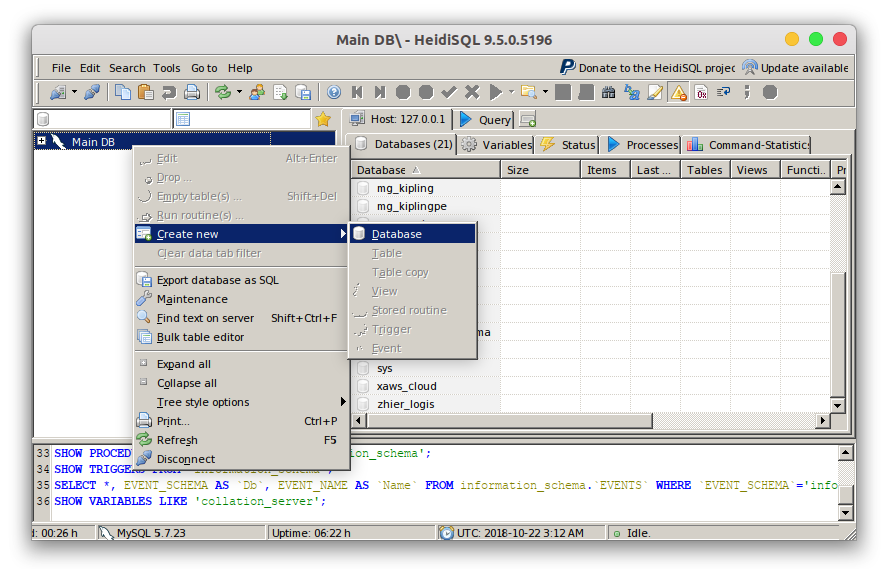
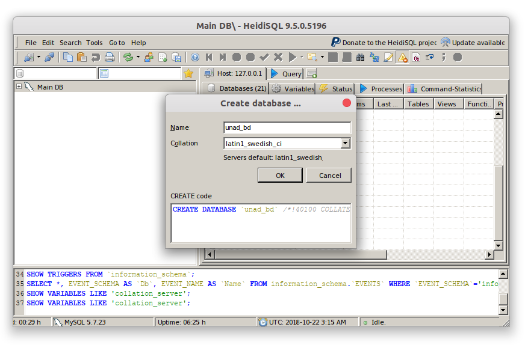
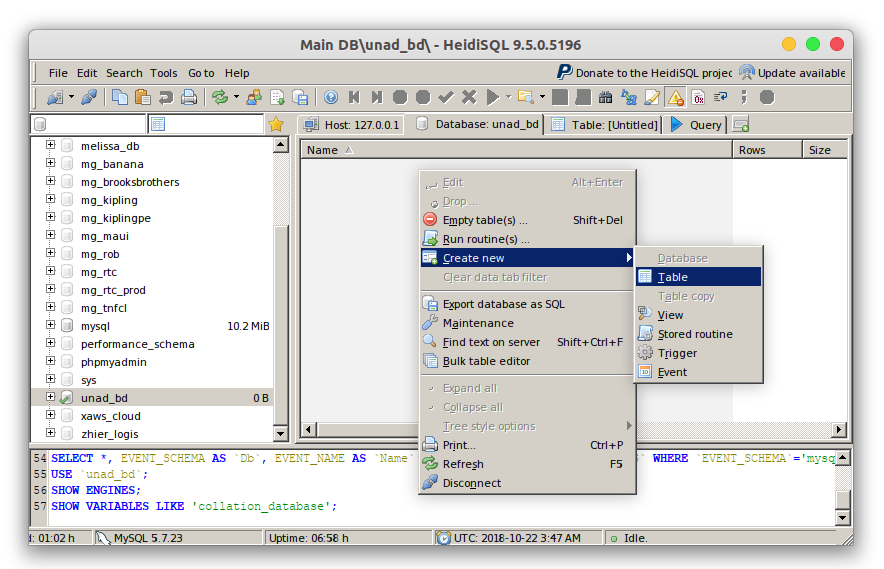
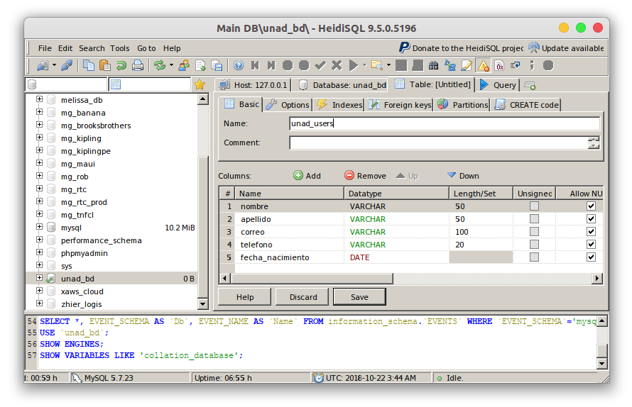

HeidiSQL es muy sencillo de utilizar, es por esta razón que fue el gestor escogido para el desarrollo de este OVI.
Como estamos en el paso de creación de la Base de Datos, para esto daremos click derecho en el ícono del delfin (Que sería nuestra cuenta de MySQL practicamente) y le daremos a "Create New" > "Database", con esto eligiremos un nombre para nuestra base de datos y la colación. La que está por defecto basta para esta ocasión.


Creando nuestra primera tabla
Una vez creada la base de datos, podremos acceder a ella desde el listado del panel izquierdo de HeidiSQL, dando un click accedemos a ella, luego a mano derecha aparecerían nuestras tablas pero como está recién creada, pues necesitaremos crear una; para ello daremos click derecho > "Create New" > "Table", con esto se nos abrirá una pestaña donde hay requerimientos a llenar para poder crear nuestra primera tabla.

En donde dice "Name" agregaremos pues el nombre de la base de datos, en nuestro caso usaremos "unad_users" para la creación de la tabla de usuarios.
Toda tabla debe poseer columnas, por lo cual crearemos las siguientes presionando el botón "Add":
- NOMBRE: nombre, del tipo VARCHAR con longitud de 50
- APELLIDO: apellido, del tipo VARCHAR con longitud de 50
- CORREO: correo, del tipo VARCHAR con longitud de 100
- TELÉFONO: telefono, del tipo VARCHAR con longitud de 20
- FECHA DE NACIMIENTO: fecha_nacimiento, del tipo DATE
Una vez agregados, presionamos "Save" para guardar nuestros cambios".

Con estos datos tendremos una pequeña tabla de usuarios con información básica pero importante de cualquier persona.